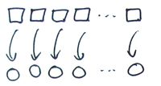
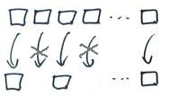
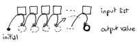
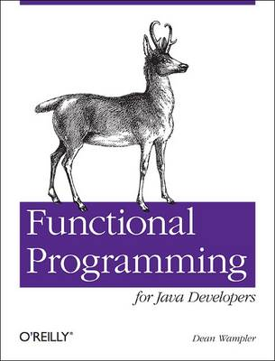

Lessons of Functional programming
| Author: |
Vassil Dichev |
|---|
| Date: |
26.10.2012 |
|---|
Why learn?
Development is moving towards functional programming
...or is, at least, increasingly influenced by it.
Great paradigm shifts
- GOTO → structured programming
- Manual memory management → Garbage collection
- Imperative programming → Functional programming
Benefits
- Correctness
- Compositionality
- Flexible execution (parallelization)
Function definition
- Math: mapping inputs to outputs
- Programming: decompose and reuse solutions
Functional Programming
- Referential transparency
- Functions as first-class
Finding FP
- Excel
- XSLT
- REST
- Hadoop, Google MapReduce...
Benefits
- Correctness
- Compositionality
- Flexible execution (parallelization)
Immutability
String
Joda time
Effective Java
Classes should be immutable unless there's a very good reason to make them mutable
—Joshua Bloch
Java Concurrency
Immutable objects are simple.
Immutable objects are also safer.
Immutable objects are always thread-safe.
Immutability
- thread-safe
- don't need copy and clone
- easily cached
- good Set and HashMap keys
Benefits
- Correctness
- Compositionality
- Flexible execution (parallelization)
Life without mutation
- Recursion
- Functional data structures
- Local mutation
- If a tree falls in the forest and nobody hears it, does it make a sound?
Functional data structures
Lambda Expressions
Anonymous classes
- declaration
- this and super
- return
Functional interfaces
void Runnable.run()
T Callable<V>.call()
int Comparator<T>.compare(T o1, T o2)
boolean FileFilter.accept(File path)
void ActionListener.actionPerformed(ActionEvent e)
void ChangeListener.stateChanged(ChangeEvent e)
Variable capture
Must be effectively final
int sum = 0;
list.forEach(e -> { sum += e.size(); });
Race conditions
To evolve the language in 2011 in a way that makes concurrent and parallel operations even more dangerous would be foolish.
—Brian Goetz
Higher-order functions
Functions, which take other functions as parameters and/or return functions.
|
|

|
- filter (select, find_all, findAll)
|

|
|
|

|
Combinators are reusable!
Combinators are arguably the most reusable constructs we have in programming
—Dean Wampler
|

|
New idioms
list.map(e -> e.size())
.reduce(0, (a, b) -> a+b);
Expressions everywhere
- transformations
- REPL (Read-Eval-Print Loop)- interactive shell
- Declarative- DSLs
Patterns
- Command
- Strategy
- Builder
- Factory
JVM languages
list.map(2 * _)
list.filter(_ % 2 == 0)
(map #(* 2 %) '(1 2 3))
(filter #(= (mod % 2) 0) '(1 2 3))
Java libraries
- Guava
- lambdaj
- FunctionalJava
Summary
- Two definitions of Functional programming
- First-class functions
- Referential transparency
- Both have benefits
- Go gently; no need to go FP all the way
- Don't panic- you know this stuff!